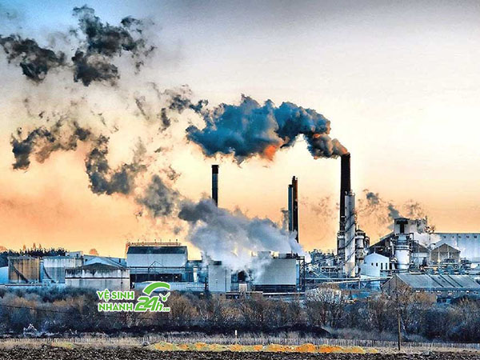

Tình trạng môi trường

Thực trạng ô nhiễm môi trường hiện nay, đang được sự quan tâm của
toàn thể cộng đồng. Trước tình trạng nhiễm
môi trường đã và đang là một vấn đề nan giải toàn cầu. Thậm chí vấn đề này không chỉ là một mối quan tâm
bình
thường. Chúng đang được báo động. Trên thế giới, theo thống kê, số lượng người mắc các bệnh liên quan đến
các
vấn đề ô nhiễm môi trường rất nhiều và không có dấu hiệu dừng. Đặc biệt ở một số tỉnh thành, thành phố lớn
thì
chỉ cần đi ra đường một lúc thì bạn sẽ thấy tình trạng ô nhiễm môi trường rõ như thế nào, thậm chí còn thể
hiện, bám dính trên người bạn
Thực trạng hiện nay như thế nào?
Không phải hiển nhiên mà nó được là vấn đề toàn cầu, báo động nghiêm trọng. Ô nhiễm môi trường gây hủy hoại
không gian sống của toàn sinh vật, mọi người trên Trái Đất. Ảnh hưởng đến sức khỏe của mọi người. Và cái tình
trạng này từng ngày vẫn đang tăng lên một cách đáng kể
Dưới đây là một số thông tin, thống kê mà chúng tôi thu thập được
-
Theo thống kê, chỉ tính riêng Việt Nam đã tiêu thụ khoảng 10.000 tấn hóa chất chỉ trong một năm. Loại hóa
chất này dùng để bảo vệ thực vật. Ngoài ra, chúng ta còn có 2.3 tấn rác thải sinh hoạt, 7 triệu tấn chất
thải rắn công nghiệp, và còn hàng tá chất thải từ các vấn đề khác.
- Hơn 250 khu công nghiệp đã thải ra môi trường 550.000m3 nước thải từng ngày. Điều đáng nói không phải bất
cứ khu công nghiệp nào cũng thải chất thải ra ngoài khi đã xử lí đúng quy trình. Hầu hết, ở Việt Nam, khoảng
615 cụm công nghiệp thì chỉ có 5% trong số đó có hệ thống xử lý nước thải đúng quy chuẩn, quy trình mà bên
Môi Trường đề ra. Còn lại đều xả thải trực tiếp hoặc không xử lí đúng tiêu chuẩn. Đây còn chưa tính hàng
ngàn các cơ sở ý tế đều thải ra chất thải hằng ngày
-
Dù đưa ra hàng loạt thống kê để mọi người nắm được mức báo động ô nhiễm môi trường. Tuy vậy, các tình trạng
này không có dấu hiệu dừng lại và vẫn đang tăng cao. Điều đó tạo ra mối nguy hiểm nghiêm trọng đến môi
trường sống và sức khỏe con người
Tính trạng báo động cao trước ô nhiễm môi trường
Vậy, việc con người xả thải đã đem lại những hậu quả nghiêm trọng nào?. Dưới đây là một số loại ô nhiêm phổ
biến nhất:
Thực trạng Ô nhiễm môi trường đất
Đất là một vật vô tri vô giá, đừng nghĩ rằng chỉ cần chúng không cho chúng ta ăn, hay cung cấp nguồn sống như
nước. Thì nó là một thứ vô giá trị. Đất là một trong các tài nguyên quý giá của con người. Tuy nhiên ngày nay,
con người đã sử dụng đất trồng cây, đất gây rừng để thỏa mãn nhu cầu sống. Xây hàng tá các công trình, khu
công nghiệp, nhà máy. Vì vậy, từng mảng xanh của Trái Đất trở nên ít hơn trước.
Chưa kể, hàng loạt các công trình, khu sản xuất hằng ngày xả thải nước thải, hóa chất. Mà không qua xử lí, dần
để chúng ngấm vào đất. Khiến đất không còn giá trị khai thác nữa
Thực trạng Ô nhiễm môi trường nước
Có nước, chính là có sự sống, tuy vậy hiện nay nguồn nước. Mà bạn cho là sử sống đấy dần dần cạn kiệt và bị ô
nhiễm nặng nề. Có một vài bộ phận vẫn và đang cố gắng sáng tạo, phát minh và có những hành động bảo vệ môi
trường hết mức. Thì lại có vài thành phần không hề nhỏ, luôn xem các nguồn tài nguyên quý giá của chúng ta là
những nơi, những bãi tập kết rác. Họ thường xuyên vứt rác xuống ao hồ sông, gần các khu vực bãi biển. Xem đó
như một nơi chứa rác
Không những vậy, rất nhiều các khu công nghiệp nhà máy đã không chịu xử lí nước thải trước khi xả thải. Làm
nguồn nước chúng ta bị biến chất, đen nhỏm, khó mà trở lại thành một nguồn nước sạch để chúng ta có thể sinh
són
Thực trạng Ô nhiễm môi trường không khí
Trong có vẻ khó tin, nhưng đây lại là một câu chuyện có thật. Giữa lớp không khí chúng ta tưởng chừng trong
suốt, mà đi lại bị dính một lớp bụi đen đầy mặt.
Đấy chính là bầu không khí ở Hà Nội chúng ta đấy! . Một phần rất lớn khí bụi đã phần đến từ các phương tiện đi
lại. Và một loại các nhà máy, xí nghiệp còn “tiếp tay” cho vấn đề này nặng hơn khi thải rất nhiều khí độc ra
ngoài môi trường.
Thậm chí, nếu khuôn mặt bạn chỉ cần làm sạch ở nhà. Nhưng đi trên đường Hà Nội khoảng nửa tiếng, dùng bông tẩy
trang quét 1 lớp trên mặt, thì bạn sẽ thấy vùng màu đen (bụi) rõ trên bông đấy.
Không khí xung quanh ngày càng ô nhiễm
.jpg)
.jpg)
.jpg)